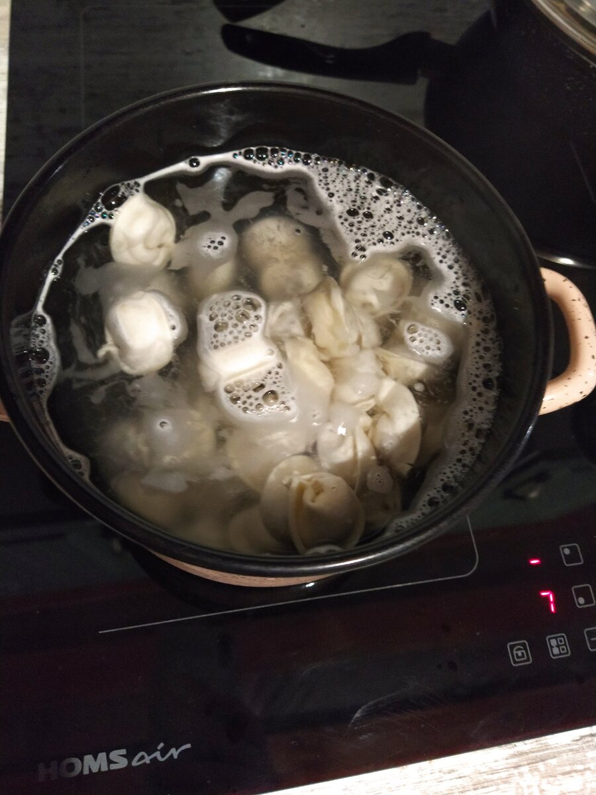
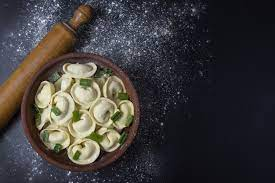
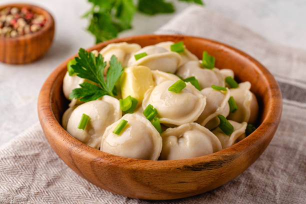
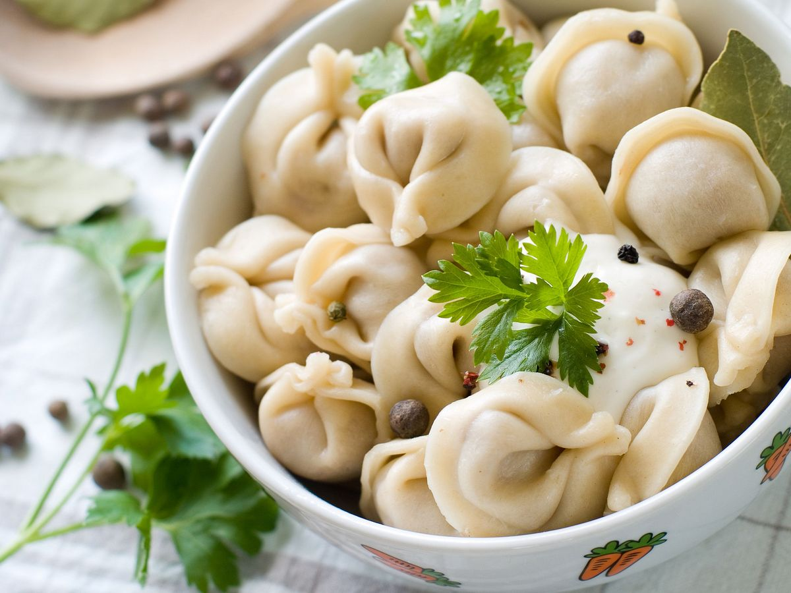
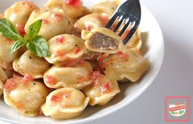

Шаг 1:
Приготовьте кипящую подсоленную воду в большой кастрюле.

Шаг 2:
Аккуратно опустите пельмени в кипящую воду один за другим.

Шаг 3:
Периодически помешивайте, чтобы пельмени не прилипали к дну кастрюли.

Шаг 4:
Варите пельмени до готовности, обычно от 5 до 7 минут. Они должны стать плавающими и мягкими.

Шаг 5:
Аккуратно вылейте готовые пельмени на дуршлаг, чтобы удалить лишнюю воду.
